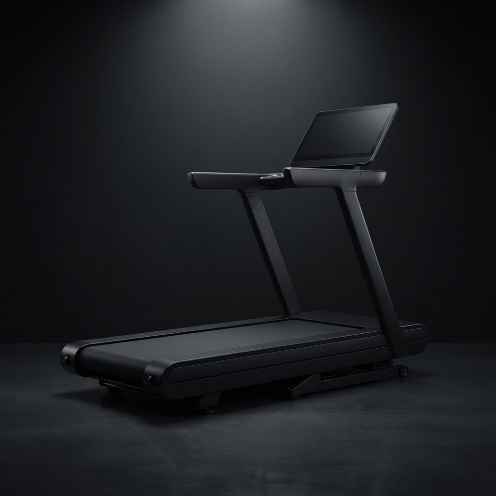

Connect your treadmill
Press Start on the console to wake it up. Telo Run 1 reads your stride and sets the belt speed for every sprint and recovery.
Echelon Stride-6s
STR6S-41c2e807
Pairing takes about 0.9 s, then the card gets a check mark (paired).
Works with
- Echelon Stride-6sFull control
- Echelon Stride-8sFull control
- Echelon Stride SportFull control
- Echelon Stride Auto-FoldFull control
- Other FTMS smart treadmillsBeta